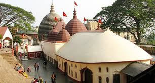

Kamakhya Temple

The Kamakhya Temple also Kamrup-Kamakhya is a Hindu temple dedicated to the mother goddess Kamakhya.It is one of the oldest of the 51 Shakti Pithas. Situated on the Nilachal Hill in western part of Guwahati city in Assam, India, it is the main temple in a complex of individual temples dedicated to the ten Mahavidyas: Kali, Tara, Sodashi, Bhuvaneshwari, Bhairavi, Chhinnamasta, Dhumavati, Bagalamukhi, Matangi and Kamala.Among these, Tripurasundari, Matangi and Kamala reside inside the main temple whereas the other seven reside in individual temples.

HOW TO REACH ?
Nearest Airport: Guwahati
Nearest Railway Station: Guwahati
Nearest Bus Stand: Guwahati